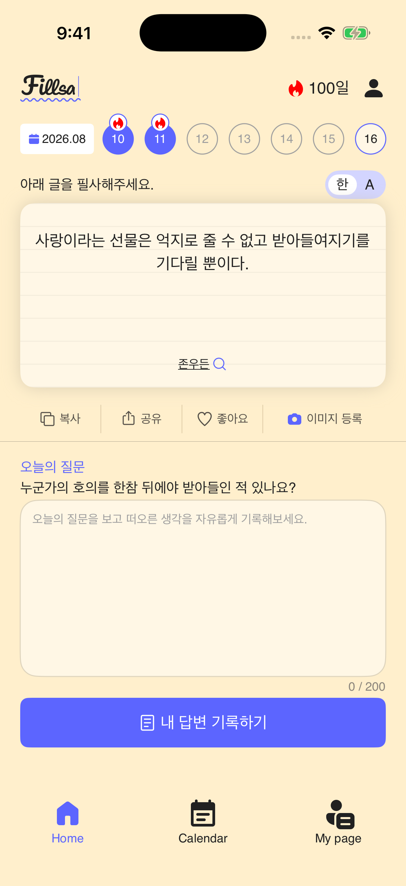
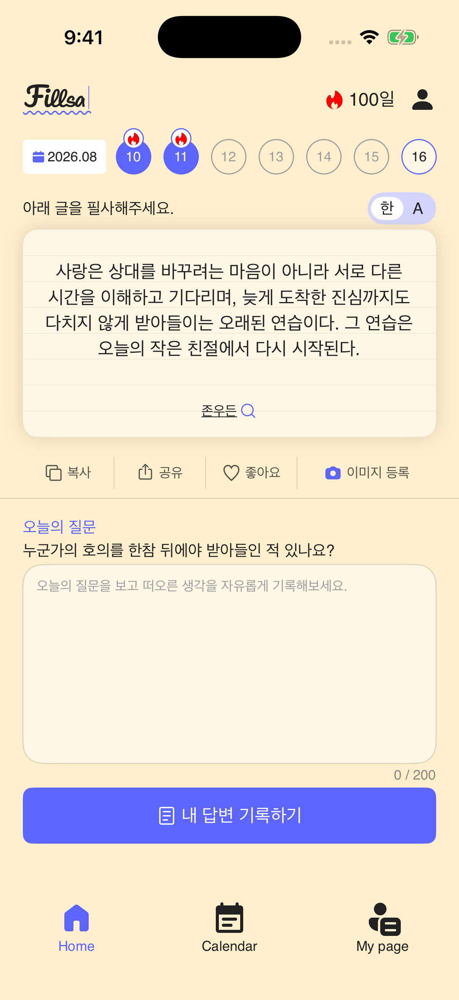
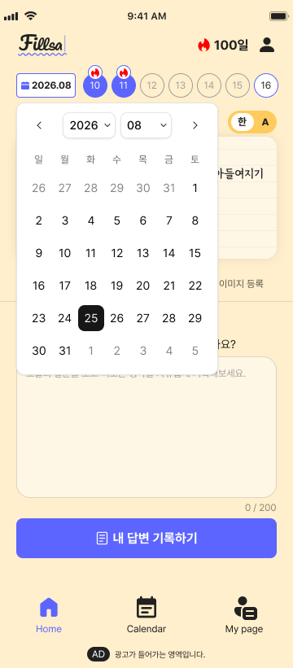
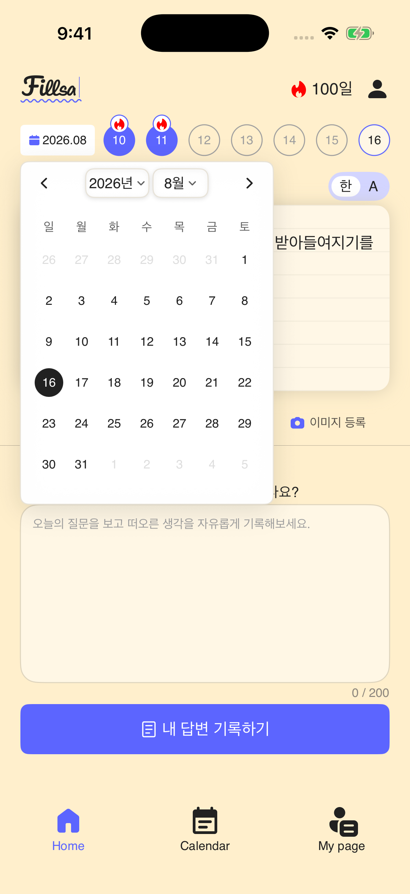
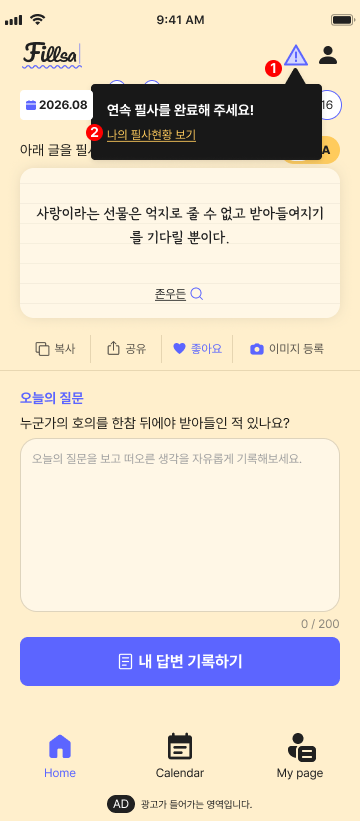
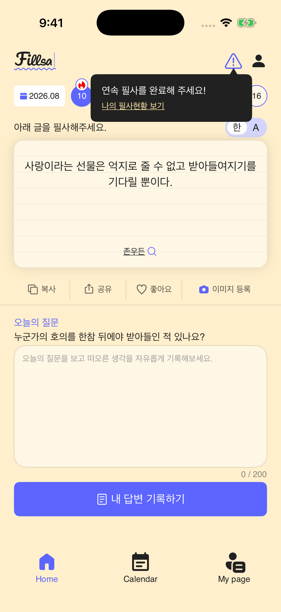
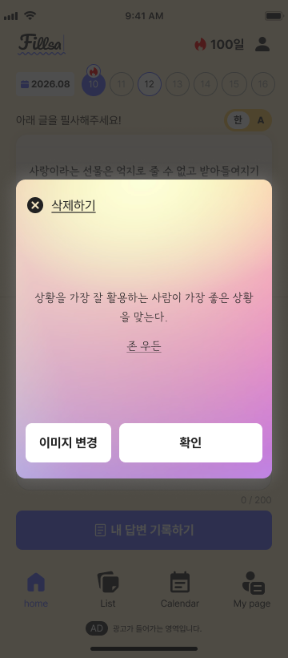
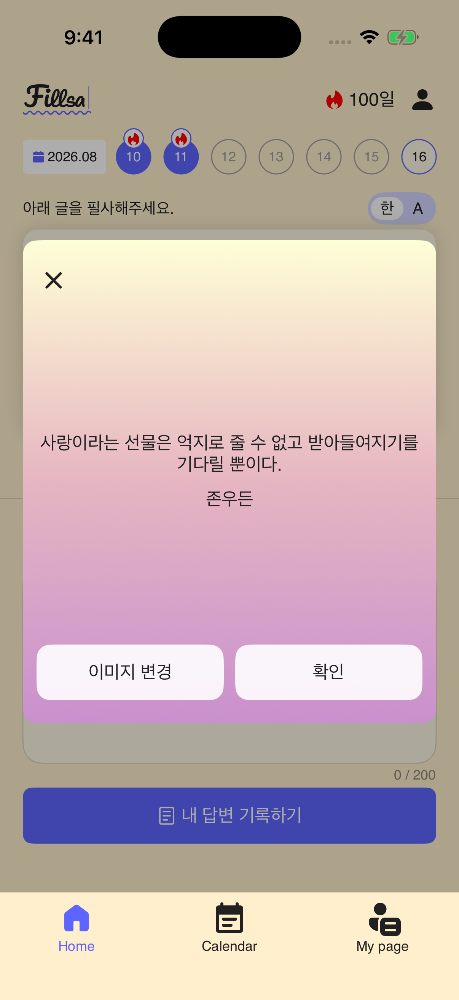

기본 홈
날짜 원형 아이콘, 명언 카드, 액션 버튼 4개, 질문 입력창의 간격과 폭을 함께 확인합니다.



긴 명언
왼쪽은 기본 명언 Figma입니다. 긴 명언 전용 Figma 프레임은 없어 문장 내용은 다르며, 카드 안 줄바꿈과 높이 변화만 비교할 수 있습니다. 오른쪽은 일반 글자 크기 캡처입니다.


달력 팝업
월 선택 버튼의 왼쪽 모서리와 팝업의 시작점, 버튼 아래 간격을 확인합니다. Figma와 iOS 캡처의 선택 날짜는 다릅니다.




연속필사 툴팁
상태 아이콘과 삼각형 화살표의 중심 정렬, 툴팁 폭과 수직 간격을 확인합니다. Figma에는 설명용 빨간 번호가 포함되어 있습니다.




이미지 팝업
배경 이미지가 없는 그라데이션 변형을 비교합니다. Figma는 등록된 이미지 상태라 삭제 버튼이 있고 명언 문구도 다릅니다. 현재 iOS 테스트 상태에는 등록 이미지가 없어 삭제 버튼이 표시되지 않습니다.




